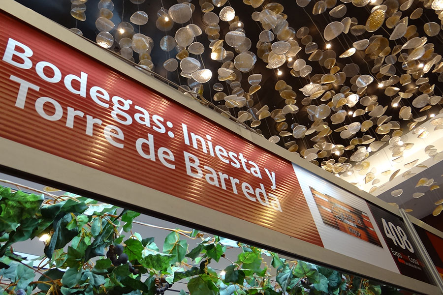
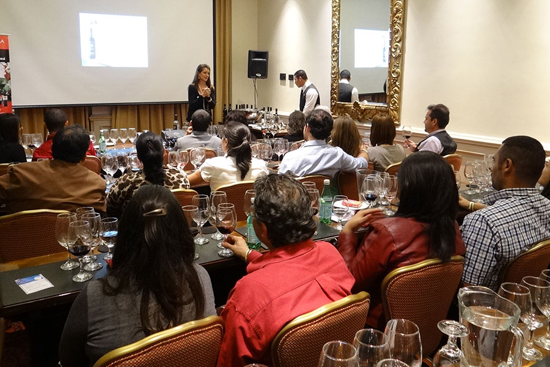
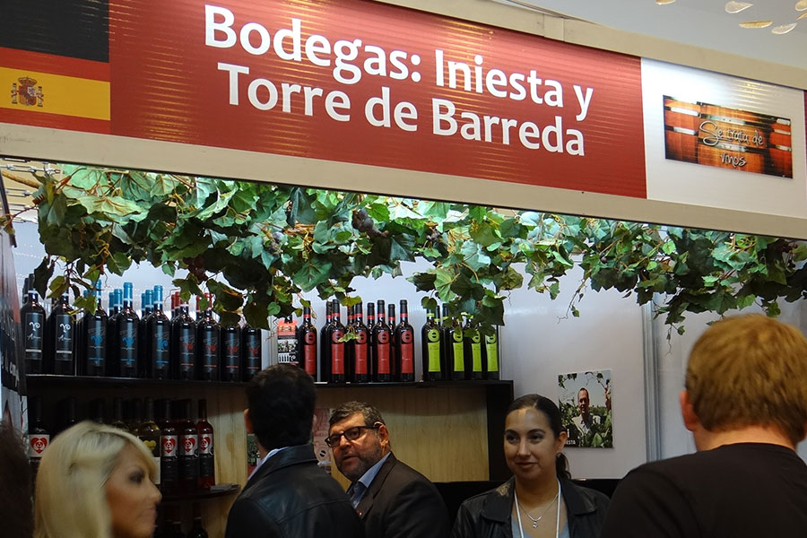

Participación en Expo Vino 2013
En el pasado miércoles 23 de Octubre, Se Trata de Vinos tuvo el agrado de participar en la exposición de vinos Expo Vino 2013, organizada por la revista Apetito y EKA Consultores, llevada a cabo en el Hotel Real Intercontinental, Escazú, Costa Rica.
Fue un evento de tres días que permitió a los asistentes y expositores interactuar intercambiar contactos y experiencias. Se realizaron dentro de las actividades a resaltar, catas de vinos y degustaciones de productos como vinos de diferentes partes del mundo, lácteos, chocolates y embutidos.
Se Trata de Vinos, ubicado en el Stand 408, recreó un ambiente rústico exterior que nos trasladaba a una típica “Tasca española” (local modesto de bebidas y comidas), decorado con elementos característicos como los típicos barriles de vino, utilizados como base para la colocación de encimeras rústicas de madera como mostrador. También la inclusión de parras o enredaderas de vid en la parte superior del stand, que nos hacía recordar los viñedos y que son el origen de cada copa de vino servida. No omitimos resaltar un componente publicitario en nuestro Stand, un banner con la imagen de Andrés Iniesta, dueño de la Bodega Iniesta, el cual fue muy comentado e incluso fotografiado por los asistentes al evento.
El primer día de la exposición fue dirigido a personas del gremio gastronómico y del comercio vinícola del país, con una gran participación hasta abarrotar las instalaciones. Entre los asistentes se encontraban dueños de reconocidos restaurantes, hoteles, pizzerias entre otros.
El jueves 24 de Octubre, Se Trata de Vinos tuvo la oportunidad de realizar una cata de sus vinos en el salón Jacaranda 2, donde se expuso a los asistentes 4 de ellos. Nuestra asesora Beatriz Carballo Sommelier de Se Trata de Vinos, se refirió a 3 vinos de la Bodega de Andrés Iniesta: Corazón Loco Blanco, Corazón Loco Rosado y Corazón Loco Tinto; para luego concluir con uno de nuestros productos estrella, el vino tinto “Amigos” de la Bodega Torre de Barreda. Un vino multivarietal con 12 meses de crianza en barrica de roble americano y francés y 6 meses en tinaja de cemento. Este último muy afamado a lo largo de todo el evento por muchos asistentes, quienes se acercaban a degustarlo por recomendación.
Para el dia del cierre, el viernes 25 (y en mismo jueves 24), muchos de los asistentes visitaron el Stand de Se Trata de Vinos para adquirir algunos de nuestros productos. Los más solicitados fueron Corazón Loco Blanco, Corazón Loco Rosado y por supuesto, Amigos de Torre de Barreda.
La gran variedad en la adquisición de nuestros productos e interés y preferencia de muchos de los asistentes, nos confirma, que el evento fue exitoso. Saludos y hasta pronto.